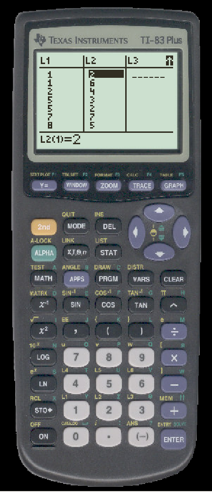
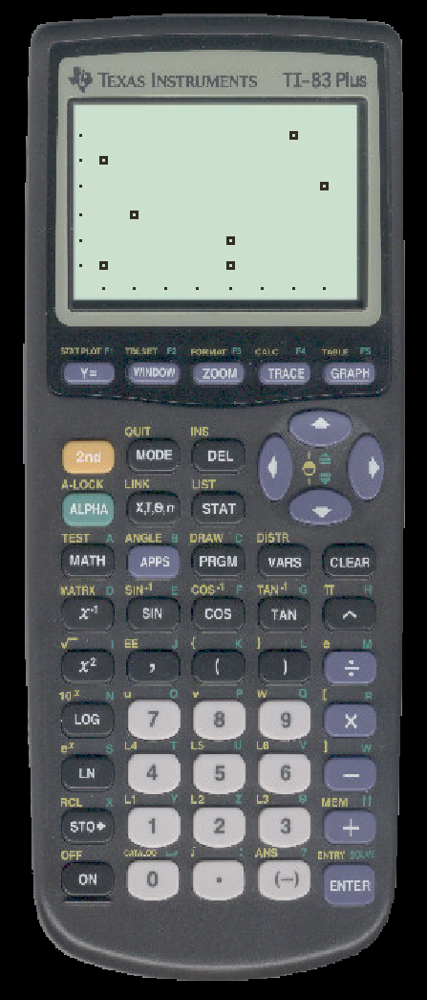

TO DRAW A SCATTER PLOT ON THE TI
- Enter your paired data into two lists. The pairs should be on the same rows. We will use L1 and L2.

- Press 2nd-STAT PLOT
- Press ENTER to select Plot1
- If necessary, press ENTER to turn on Plot1.
- Use the arrows to maneuver to the plot that looks like a bunch of dots and press enter.
- Make sure the Xlist and Ylist correspond to where you entered data.
- Press ZOOM
- Select ZoomStat
